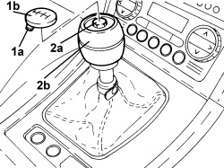

2125C24 GEAR LEVER KNOB - R + R
- Path
- Procedures > 21 GEARBOX UNIT > 2125 MANUAL GEARBOX EXTERNAL CONTROLS > 2125C MANUAL GEARBOX EXTERNAL CONTROL (CABLES) > 2125C24 GEAR LEVER KNOB - R + R
- Kind
- repair procedure (removal / refitting; the operation number is the code)
- Applies to
- all engines; all production periods
- Interactive page
- https://sloeber94.github.io/elrnDB-aBrrSpdr/en/#/946002078
Applies to: all engines; all production periods
 Removing
Removing
 Refitting
Refitting1. Adjust the retaining clips (1a) and remove the stud (1b).
2. Undo the bolt (2a) and remove the gear lever grip (2b).

Applies to: all engines; all production periods
Refitting
Removing- Place the grip in it housing on the gear lever and secure it using the bolt.
- Fit the stud for the grip in its housing and secure it using the retaining clips.